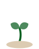

sprout
Learning that grows with you
01
Connects to your course in one click
Paste a syllabus. Sprout maps every concept and what comes first.
Add a course
CourseCS 201: Data Structures
Syllabus
Connect my course
02
Shows what you actually know
After forgetting, quiz misses and reviews. Not what you read once.
Mastery · CS 201
Studied100%
Forgotten−24
Quiz misses−11
Reviewed+9
Really know
100%

03
Sends you one number every morning
Know exactly what to study today. Nothing else to open.
Sprout7:00 AM
4
concepts due today
7 days to your midterm

sprout
Study buddy that grows with you
Join the waitlist